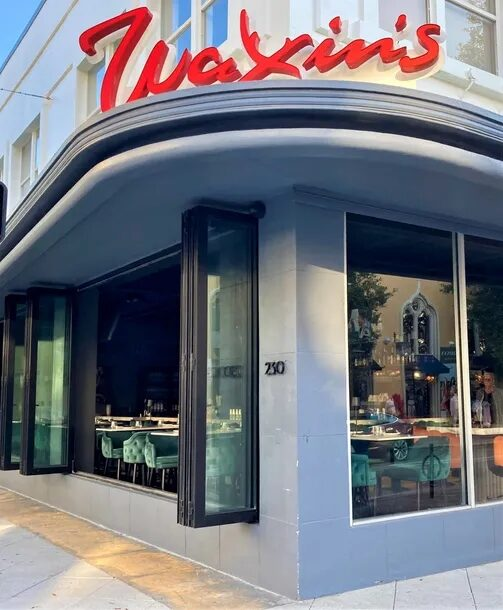
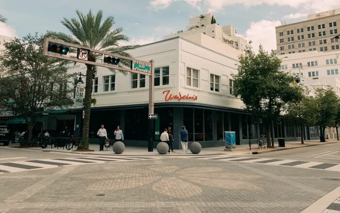
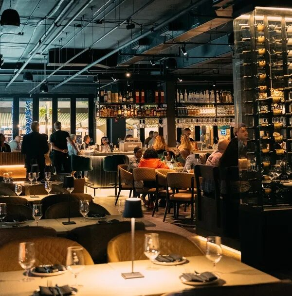

Waxin’s West Palm Beach
Fixed storefront on both frontages and a Euro-Wall lift-and-slide system that opens the corner of Clematis and Olive completely - installed owner-direct for Waxin’s third and most ambitious location.
When the glass is the centerpiece, the installer has to be perfect.
Waxin’s is a Swedish-American restaurant concept with roots in Palm Beach Gardens. Their third location - and their most ambitious - landed at 230 Clematis St in downtown West Palm Beach, on the corner of Clematis Street and Olive Avenue: the city’s main dining and entertainment corridor.
The Palm Beach Post noted the restaurant’s “expansive floor-to-ceiling windows that open completely along Clematis Street.” That’s not an accident of architecture. It’s a deliberate product choice - Euro-Wall - and an installation executed without margin for error.
ACG worked directly with the Waxin’s ownership group - no general contractor layer - brought in early, before the glass was a line item on a bid list, and staying through installation and close-out. The scope covered two systems: fixed storefront glazing along both the Clematis Street and Olive Avenue frontages, and the Euro-Wall lift-and-slide opening system at the corner.

The corner that disappears.


A performance system made of glass.
A corner that opens completely
Two wall sections meeting at 90 degrees, both capable of folding fully open - panels tracking on their hardware with zero binding, sealing tight against Florida weather when closed, locking securely at end of service. Every panel custom-fabricated to the opening.
Lift-and-slide engineering
Euro-Wall panels first lift slightly off the bottom track, then glide laterally on precision roller hardware - handling panel sizes and weights a conventional slider can’t, with the minimal frame profiles high-end architecture demands.
Owner-direct
No GC layer. The ownership group brought ACG into the conversation early, and the same team stayed through full installation and close-out.
Home market, highest visibility
ACG’s headquarters is in West Palm Beach. Waxin’s opened November 21, 2025, and every dinner service since is a live demonstration of Euro-Wall installed right - walkable from anywhere downtown.
More from the portfolio.

Have plans? Send them to Connor directly.
Upload drawings and bid-date info - a scoped proposal or budget direction comes back in 48 hours.